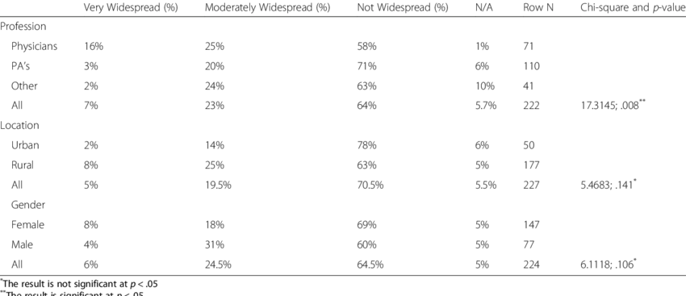

<!DOCTYPE html>
<html lang="en">
<head>
    <meta charset="UTF-8">
    <meta name="viewport" content="width=device-width, initial-scale=1.0">
    <title>Data Analytics</title>
    <link rel="stylesheet" href="style.css">
</head>
<body>
    
</body>
</html>
<u>
    <h2>INFM316: Data Analytics Using R and R Studio</h2></u>
<h3>Week 1: </h3>
<p>
    x = c(1.1, 1.3, 1.5, 1.8, 1.8, 1.8, 1.8, 1.9, 2.1, 2.4, 2.4, 2.7, 2.9, 2.9, 3, 3, 3, 3.1, 3.2, 3.5, 3.8, 3.9, 4, 4.1, 4.1, 4.3, 4.4, 4.4, 4.5, 4.5, 4.7, 4.9, 5, 5.3, 5.4, 5.5, 5.6, 5.7, 5.8, 5.9, 5.9, 6, 6.2, 6.3,
          6.5, 6.9, 7, 7.1, 7.4, 10.8)
    <br>
    table(x)
</p>
<p>
    <a href="PDF/Week1.Rplot.pdf" target="_blank">hist(x)</a> <br>
    <a href="PDF/Week1.freqRplot.pdf" target="_blank"> hist(x, probability=TRUE, main='Relative frequency histogram of x') </a>
    <br>
    <a href="PDF/Week1.6classesRplot.pdf" target="_blank">hist(x, breaks=6, main='Histogram of x using 6 classes')</a>
    <br>
    <a href="PDF/Week1QQplot.pdf" target="_blank">qqnorm(x)</a>
    <br>
    <a href="PDF/Week1.QQLineplot.pdf" target="_blank">qqline(x)</a>
    <br>
</p>
<h3>Week 2:</h3>
<a href="PDF/annotated-C_Homework_2.png.pdf" target="_blank">R Code for Covid_Depression_Case_Study</a><br>
<a href="PDF/annotated-CHomework_2.txt.pdf" target="_blank">Spreadsheet</a><br><br>
<p>
    The global healthcare community continues to grapple with the multifaceted challenges
    presented by the ongoing COVID-19 pandemic. This virus was caused by the severe acute
    respiratory syndrome coronavirus 2 (SARS-CoV-2). As knowledge about the virus expands, it's
    becoming evident that COVID-19 doesn't just affect people during the acute phase of illness.
    Emerging data suggests that some individuals experience ongoing symptoms and long-term
    complications after recovering from the initial infection, leading to what is now recognized as
    post-acute COVID-19 syndrome.
</p>
<p><b>References</b></p>
<p>
    Nalbandian, A., Sehgal, K., Gupta, A., Madhavan, M. V., McGroder, C., Stevens, J. S., Cook, J.
    R., Nordvig, A. S., Shalev, D., Sehrawat, T. S., Ahluwalia, N., Bikdeli, B., Dietz, D., Der-
    Nigoghossian, C., Liyanage-Don, N., Rosner, G. F., Bernstein, E. J., Mohan, S., Beckley,
    A. A., ... Wan, E. Y. (2021, March 22). Post-acute COVID-19 syndrome. Nature News.
    <a href="https://www.nature.com/articles/s41591-021-01283-z">https://www.nature.com/articles/s41591-021-01283-z</a>
</p>

<h3>Week 3:</h3>
<a href="PDF/GGPlot2.pdf" target="_blank">GG Plot </a> <br>
GGPlot 2 library used <br> <br>
<b>Data Manipulations Using R</b> 
<ul>
    <li>Imported data from an Excel file named Covid_Depression_Case_Study.xlsx.</li>
    <li>Calculated female counts from female percentage and sample size.</li>
    <li>Rounded female counts to the nearest integer.</li>
    <li>Derived male counts by subtracting female counts from sample size.</li>
    <li>Renamed the fourth column to "Sample_Size" for clarity.</li>
</ul>
<b>Data Visualization:</b>
<ul>
    <li>Created a scatter plot using ggplot2 library.</li>
    <li>Plotted female and male counts against the "Study" variable.</li>
    <li>Customized colors for females (dark red) and males (steel blue).</li>
    <li>Adjusted point sizes.</li>
</ul>
<b>Interpretation of Scatterplot Output:</b>
<ul>
    <li>Scatterplot shows distribution of females and males across different studies.</li>
    <li>Consistent patterns or trends may suggest a relationship between the study and gender distribution.</li>
    <li>Outliers or unusual patterns can be identified.</li>
    <li>Relative proportions of genders across studies are comparable.</li>
    <li>Insights gained can aid in further analysis or decision-making regarding the studies.</li>
</ul>

<h3>Week 4:</h3>
<p>Use the following table of perceived prevalence of depression in Vietnam. <br>
    Import the excel table into R-Studio and plot the Perceived Depression Prevalence by location, profession and gender. <br>
 <br> 

    <a href="PDF/annotated-DA.Week4.pdf" target="_blank">Graph by location</a> <br> <br>
    <a href="PDF/annotated-PR.Week4.pdf" target="_blank">Graph by profession</a> <br> <br>
    <a href="PDF/annotated-GN.Week4.pdf" target="_blank">Graph by gender</a>
</p>

<h3>Week 5:</h3>
<p><B>Write a paragraph for your case study paper.</B> <br></p>
    <p>
        The global healthcare community continues to grapple with the multifaceted challenges
presented by the ongoing COVID-19 pandemic. This virus was caused by the severe acute
respiratory syndrome coronavirus 2 (SARS-CoV-2). As knowledge about the virus expands, it's
becoming evident that COVID-19 doesn't just affect people during the acute phase of illness.
Emerging data suggests that some individuals experience ongoing symptoms and long-term
complications after recovering from the initial infection, leading to what is now recognized as
post-acute COVID-19 syndrome. <br>
<br><b>References</b> <br>

Nalbandian, A., Sehgal, K., Gupta, A., Madhavan, M. V., McGroder, C., Stevens, J. S., Cook, J.
R., Nordvig, A. S., Shalev, D., Sehrawat, T. S., Ahluwalia, N., Bikdeli, B., Dietz, D., Der-
Nigoghossian, C., Liyanage-Don, N., Rosner, G. F., Bernstein, E. J., Mohan, S., Beckley,
A. A., ... Wan, E. Y. (2021, March 22). Post-acute COVID-19 syndrome. Nature News.
<a href="https://www.nature.com/articles/s41591-021-01283-z">https://www.nature.com/articles/s41591-021-01283-z</a> <br>

    </p>
<h3>Week 6:</h3>
<h3>Week 7:</h3>
<h3>Week 8:</h3>

